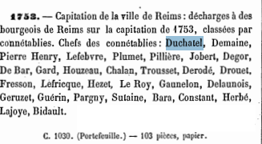

Identité et statut de Nicolas Duchastel de Montrouge
Conseiller du Roi, avocat en parlement et professeur en droit de l'université de Reims, lieutenant en la maîtrise des eaux et forêts de Reims et d'Épernay, lieutenant au bailliage et police de Reims, puis lieutenant général de police de la ville : Nicolas Duchastel de Montrouge cumule, tout au long de sa carrière, les charges les plus en vue de la magistrature rémoise avant d'être anobli, quelques mois à peine avant sa mort.
Biographie et carrière
Nicolas Duchastel de Montrouge naît le 3 juillet 1729 à Reims, paroisse Saint‑Denis, fils de François Duchastel et de Marie Jeanne Galloteau. Il meurt le 7 juillet 1784 à Reims, à l'âge de 55 ans.
Avocat au parlement et professeur de droit à Reims, il occupe successivement les fonctions de lieutenant des Eaux et Forêts (1761), puis de lieutenant général de police de la ville de Reims. En janvier 1784, quelques mois avant sa mort, il est anobli par lettres patentes du roi Louis XVI.
Union avec Élisabeth Deperthes (1761)
Il épouse, le 21 septembre 1761 à Reims (paroisse Saint‑Hilaire), Élisabeth Deperthes, née le 25 mars 1740 à Reims, également paroisse Saint‑Hilaire.
Le rôle du lieutenant général de police
Sous l'Ancien Régime, le lieutenant général de police de la ville de Reims est le premier magistrat royal chargé de maintenir l'ordre public et de veiller à la sécurité, aux approvisionnements et à la propreté de la ville et de ses faubourgs. Rattachée au bailliage royal de Reims, la charge cumule des attributions administratives et judiciaires.
- Police et administration : Application des règlements sur les marchés et le prix des denrées comme le pain, lutte contre les incendies, salubrité et surveillance des mœurs ou du vagabondage.
- Justice : En tant que lieutenant général du bailliage, il seconde le bailli et juge les affaires civiles et criminelles relevant de la juridiction royale.
- Origine de la charge : Ce type de fonction se développe à la suite des réformes de Louis XIV — notamment l'édit de 1667 pour Paris, étendu par la suite aux grandes villes — en s'articulant localement avec les prérogatives de l'archevêque de Reims, détenteur des droits de duché‑pairie sur la cité.
Descendance : quatre enfants, aucun héritier mâle
De son union avec Élisabeth Deperthes naissent quatre enfants, dont deux fils morts en bas âge — un fait déterminant pour la suite de la lignée, puisque Nicolas s'éteint en 1784 sans héritier mâle :
- Claude Félix Duchatel, né le 18 juin 1762 à Reims (Saint‑Hilaire), décédé le 29 octobre 1762 à Caurel (Marne), à l'âge de 4 mois.
- Marie Jeanne Duchatel, née le 3 juillet 1763 à Reims (Saint‑Hilaire).
- Marie Claude Élisabeth Duchatel, née le 18 novembre 1764 à Reims (Saint‑Hilaire).
- François Duchatel, né le 12 mars 1766 à Reims (Saint‑Hilaire), décédé le 24 juin 1768 à Reims (paroisse Saint‑Denis), à l'âge de 2 ans.
Seules ses deux filles, Marie Jeanne et Marie Claude Élisabeth, survivent à leur père.
Filiation : le lien avec la branche de Montflambert
Le généalogiste Gustave Chaix d'Est‑Ange (Dictionnaire des familles françaises anciennes ou notables, t. V, p. 95) désigne Nicolas Duchastel de Montrouge comme « l'auteur » du patronyme « Duchastel de Montrouge », sans pouvoir établir précisément son lien de parenté avec le reste de la famille. Dans leur étude généalogique de référence publiée en 2005, Jean‑ Yves Bronze et le Dr Yves Duchastel de Montrouge notent eux‑mêmes n'avoir pu confirmer cette filiation, tout en soupçonnant fortement que Nicolas soit un autre fils de Jacques Duchastel et de Marie‑Jeanne Miteau.
Les actes retrouvés dans les archives de la Marne permettent de trancher cette question laissée ouverte depuis 2005 : Nicolas est le fils de François Duchastel (1702–1768) et de Marie Jeanne Galloteau, et non un fils de Jacques Duchastel et Marie‑Jeanne Miteau. Or François Duchastel et Jacques Duchastel (1700–1740, père de Jean‑Baptiste Duchastel de Montflambert) sont eux‑mêmes cousins germains, tous deux petits‑fils de Jacques du Chastel (1624–1714) et Jeanne Desombres — François par son père Jean Duchastel (1665–1734), Jacques par son père Jean‑Baptiste Duchastel (1669–1702). Nicolas Duchastel de Montrouge et Jean‑Baptiste Duchastel de Montflambert sont donc cousins issus de germains (ce que l'usage familial désigne parfois par « petits‑cousins »), et Nicolas est bien apparenté par le sang à la lignée de Jacques Gabriel Duchastel de Montrouge, comme l'illustre le tableau ci‑dessous.
En 1753, la connétablie Duchastel figure première de liste des connétablies de Reims. Le connétable à cette date est soit Nicolas Duchastel, soit son père François Duchastel, soit son oncle Jean‑Baptiste Duchastel de Montflambert (à vérifier).

La transmission du nom « de Montrouge »
Le fils aîné de Nicolas, Claude Félix, meurt en bas âge dès 1762. Son second fils, François, ne peut à son tour poursuivre la lignée : né en 1766, il décède le 24 juin 1768 à Reims, à l'âge de 2 ans. Seules ses deux filles survivent à leur père.
Nicolas Duchastel de Montrouge meurt le 7 juillet 1784 sans héritier mâle direct. Son cousin issu de germain, Jacques Gabriel Duchastel de Montrouge, porte déjà ce même surnom quatre ans plus tard, en 1788, dans un brevet royal signé par Louis XVI. Aucun acte de succession formel n'a pour l'instant été retrouvé pour établir un transfert juridique du nom ou d'un titre entre les deux hommes en 1784 — la section suivante propose une explication différente, et mieux documentée, de la façon dont ce nom s'est perpétué dans la famille.
D'où vient le nom « Montrouge » ?
Le nom vient du domaine champenois de Nicolas Duchastel : son « Montrouge » renvoie à des terres seigneuriales situées dans la région de Reims et de la Montagne de Reims, comme le lieu‑dit du Mont Rouge à Bouzy, secteur viticole de premier ordre. À l'époque, posséder un domaine avec une maison de maître dans cette zone permettait d'asseoir son statut de noble de fraîche date.
- Le terroir du Mont Rouge à Bouzy : Situé sur le versant sud de la Montagne de Reims, le lieu‑dit du Mont Rouge, au sol crayeux exposé plein sud, abritait les parcelles de Pinot Noir les plus recherchées du secteur — un vignoble dont le vin tranquille, le « Bouzy Rouge », était servi aux banquets des Sacres des Rois de France à la cathédrale de Reims.
- Le domaine seigneurial de Montflambert : Le nom de la branche s'appuie également sur le manoir de Montflambert, édifié au XVIIe siècle à Mutigny, à quelques kilomètres de Bouzy. C'est la possession conjointe de ces domaines qui a fourni l'assise foncière nécessaire à la création du nom de terre « de Montrouge ».
- Une résidence rémoise avant tout : Bien que seigneur de ces terres, Nicolas réside principalement à Reims même, où sa charge de lieutenant général de police exige une présence constante — gestion de la criminalité, des corporations et de l'approvisionnement des marchés depuis son hôtel particulier du centre‑ville.
Pour la haute bourgeoisie rémoise, la fortune accumulée dans le commerce des draps — la spécialité originelle des Duchastel à la paroisse Saint‑Étienne — souffrait d'un déficit de prestige, ce commerce étant jugé « dérogeant » pour accéder à la noblesse. En réinvestissant ce capital dans l'achat des meilleures parcelles de Bouzy et dans le domaine de Montflambert, la famille transforme une fortune commerciale en assise foncière noble, ce qui légitime l'adoption du nom de terre « de Montrouge ». L'apothéose de cette stratégie survient en janvier 1784, lorsque Louis XVI signe les lettres patentes d'anoblissement de Nicolas. Aujourd'hui, le domaine historique de Bouzy perpétue cette mémoire sous le nom du Clos du Mont Rouge.
Le titre de baron des autres Duchastel de Montrouge ne vient pas de Nicolas, mais de Napoléon
C'est l'une des découvertes les plus importantes de la recherche généalogique de référence. L'étude de Jean‑Yves Bronze, rédigée avec la collaboration directe du Dr Yves Duchastel de Montrouge, baron actuel, établit que le titre héréditaire de baron que porte la famille depuis le XIXe siècle ne descend pas de l'anoblissement de Nicolas en 1784, mais d'une source entièrement distincte et postérieure : la noblesse d'Empire, créée par Napoléon Ier.
- Jacques‑Jean‑Baptiste Duchastel‑Berthelin (1756–1830), frère aîné de Jacques Gabriel Duchastel de Montrouge et négociant fortuné de Troyes, est fait baron d'Empire à titre héréditaire par décret impérial de Napoléon signé au palais des Tuileries le 2 janvier 1814. Il porte le titre de baron de Montflambert, du nom de la terre acquise par son père Jean‑Baptiste Duchastel en 1753.
- Sous le régime des titres et majorats impériaux, ce titre se transmet de mâle en mâle par ordre de primogéniture. Jacques‑Jean‑Baptiste meurt en 1830 sans descendance.
- Le titre revient alors de droit à son neveu, Alexandre‑Louis‑François Duchastel, fils de son frère cadet Jacques Gabriel Duchastel de Montrouge (mort prématurément en 1792). Né à Rethel le 30 juin 1784 — soit à peine une semaine avant la mort de Nicolas Duchastel de Montrouge — Alexandre‑Louis‑François porte déjà, de son vivant, le surnom de famille « de Montrouge ». En héritant du titre en 1830, il devient baron de Montrouge, combinant un titre d'Empire hérité de son oncle avec un surnom de famille distinct.
Autrement dit, le surnom « de Montrouge » et le titre de baron ont deux origines complètement distinctes qui se rejoignent par hasard chez Alexandre‑Louis‑François : le nom vient — probablement par usage plutôt que par transfert juridique prouvé — de Nicolas Duchastel de Montrouge et de son anoblissement de 1784 ; le titre de baron, lui, vient de Napoléon et de la lignée de Montflambert, trente ans plus tard. La coïncidence de date entre la naissance d'Alexandre‑Louis‑François et la mort de Nicolas n'est probablement que cela — une coïncidence — mais elle a peut‑être facilité, dans la mémoire familiale, l'idée d'une « transmission » directe qu'aucun acte notarié ne semble pour l'instant confirmer.
Pour la suite de la lignée baronniale (Alexandre‑Louis‑François, puis Jules‑Jean‑Baptiste, Léon‑Hilaire‑Alexandre, Jules‑Alexandre — qui s'établit à Montréal — jusqu'au baron actuel), voir Bronze et Duchastel (2005) dans les sources ci‑dessous.
Sources
Origine du titre de baron et généalogie descendante
- Jean‑Yves Bronze (avec la collaboration du Dr Yves Duchastel), « Des barons d'Empire au Québec : les Duchastel de Montrouge », Mémoires de la Société généalogique canadienne‑française, vol. 56, n° 4, cahier 246, hiver 2005, p. 289‑305.
- Arbre Geneanet de Jacques Gabriel Duchastel de Montrouge (Patrick Chevillotte), incluant Alexandre‑Louis‑François, baron de Montrouge.
Nicolas Duchastel de Montrouge (1729–1784) et sa famille
- Naissance, union et décès de Nicolas Duchastel de Montrouge — Archives de la Marne et Geneanet.
- Naissance d'Élisabeth Deperthes (1740) — Archives de la Marne.
- Naissances et décès de Claude Félix, Marie Jeanne, Marie Claude Élisabeth et François Duchatel — Archives de la Marne.
- Capitation de la ville de Reims (1753), connétablies — Archives de la Marne, Administrations provinciales avant 1790.